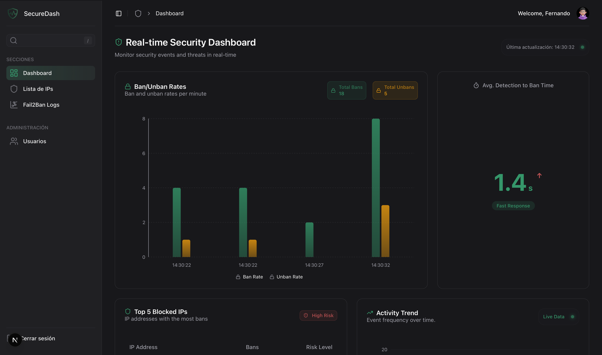
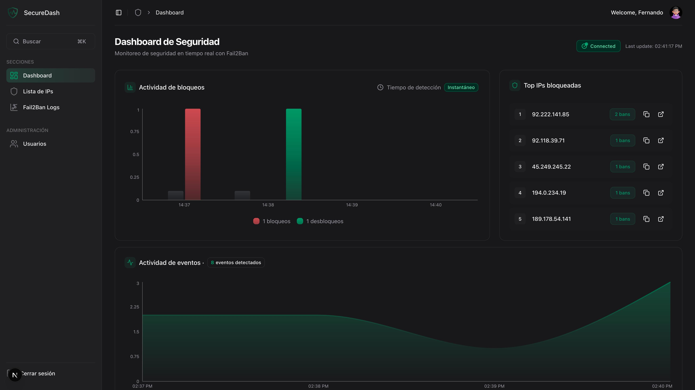
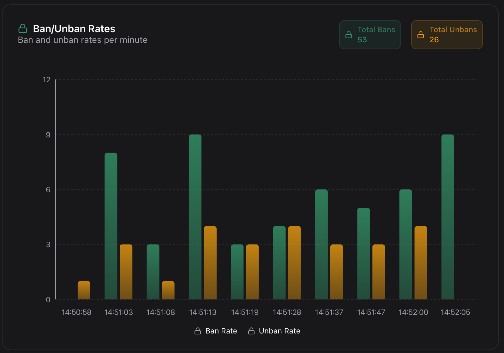
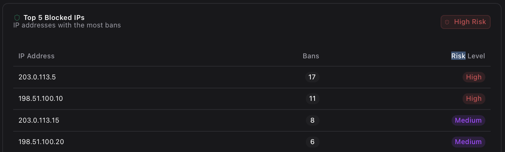
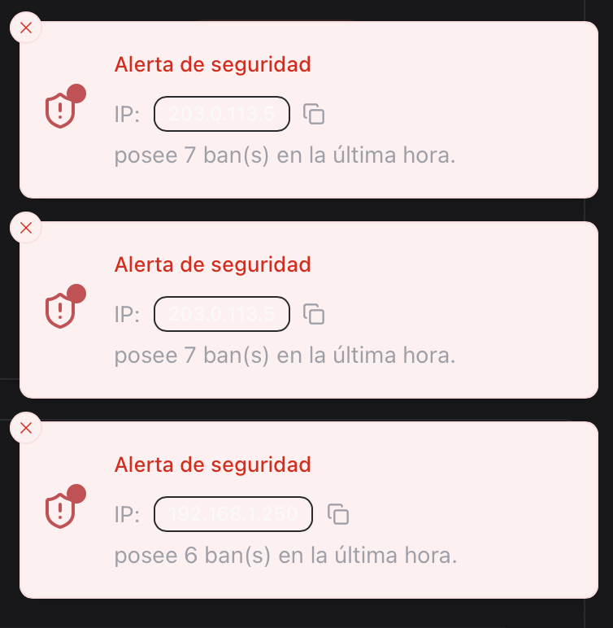

Dashboard Principal#
El Dashboard es el centro de control de Secure Dash, proporcionando una visión completa y en tiempo real del estado de seguridad de tu servidor.
 Visión General#
Visión General#
Pantalla Principal#

El Dashboard está organizado en tres secciones principales:
- Métricas Rápidas - Estadísticas clave del sistema
- Gráficos en Tiempo Real - Visualizaciones dinámicas
- Tablas de Datos - Información detallada y acciones
 Métricas del Sistema#
Métricas del Sistema#
Tarjetas de Estadísticas#

Métricas Disponibles#
| Métrica | Descripción | Actualization |
|---|---|---|
| Total IPs | IPs únicas que han interactuado | Tiempo real |
| Total Logs | Eventos totales registrados | Tiempo real |
| Logs Info | Eventos informativos | Tiempo real |
| Logs Alerta | Eventos críticos | Tiempo real |
- Iconos diferenciados por tipo de métrica
- Colores codificados según importancia
- Animaciones sutiles para cambios
- Tooltips informativos al pasar el mouse
Interpretación de Métricas#
Total de IPs#
- Verde: Actividad normal
- Amarillo: Incremento moderado
- Rojo: Actividad anómala alta
Logs de Alerta#
- 0-10: Nivel normal de amenazas
- 11-50: Actividad moderada a vigilar
- 50+: Alta actividad, requiere atención
Actualización Automática
Las métricas se actualizan automáticamente cada 5 segundos para mantener información precisa y actual.
 Gráficos Interactivos#
Gráficos Interactivos#
Gráfico de Tendencias de Actividad#
Características#
- Datos en tiempo real con punto verde indicador
- Eje temporal muestra los últimos eventos
- Escala automática según volumen de datos
- Hover interactions para detalles específicos
Interpretación#
- Picos altos: Posibles ataques coordinados
- Actividad constante: Escaneos automáticos normales
- Períodos silenciosos: Normal durante horas no laborales
Gráfico de Bans vs Unbans#

Elementos del Gráfico#
- Línea azul: Tasa de bloqueos (Ban Rate)
- Línea verde: Tasa de desbloqueos (Unban Rate)
- Eje temporal: Últimas 10 actualizaciones
- Leyenda interactiva para filtrar datos
Análisis de Patrones#
- Más bans que unbans: Sistema funcionando correctamente
- Picos de bans: Posibles ataques detectados
- Unbans frecuentes: IPs legítimas siendo desbloqueadas
Tabla de IPs Problemáticas#

Información Mostrada#
| Columna | Descripción |
|---|---|
| IP Address | Dirección IP problemática |
| Bans | Número total de bloqueos |
| Risk Level | Nivel de riesgo calculado |
Niveles de Riesgo#
- Color: Rojo
- Criterio: > 10 bans
- Acción: Monitorio continuo
- Color: Amarillo
- Criterio: 5-10 bans
- Acción: Vigilancia regular
- Color: Verde
- Criterio: < 5 bans
- Acción: Seguimiento básico
Acciones Disponibles#
- Clic en IP: Ver detalles completos
- Botón de copia: Copiar IP al portapapeles
- Enlaces a detalles: Navegación directa a gestión de IPs
 Sistema de Alertas#
Sistema de Alertas#
Alertas en Tiempo Real#

Tipos de Alertas#
- Color: Rojo
- Sonido: Notificación audible
- Duración: 10 segundos
- Ejemplo: IP con 7+ bans en última hora
- Color: Amarillo
- Duración: 8 segundos
- Ejemplo: Incremento inusual de actividad
- Color: Azul
- Duración: 5 segundos
- Ejemplo: Nuevos logs disponibles
Gestión de Alertas#
Configuración Automática#
- Umbrales predefinidos para diferentes tipos de eventos
- Filtrado inteligente para evitar spam de notificaciones
- Agrupación de alertas similares
Acciones Disponibles#
- Ver detalles: Clic en la alerta para más información
- Copiar IP: Botón directo para copiar direcciones IP
- Ir a gestión: Enlaces directos a secciones relevantes
 Datos en Tiempo Real#
Datos en Tiempo Real#
Sistema WebSocket#
Conexión Activa#
- Indicador verde en gráficos muestra conexión activa
- Reconexión automática si se pierde la conexión
- Notificación cuando se restaura la conectividad
Frecuencia de Actualización#
| Componente | Frecuencia |
|---|---|
| Métricas principales | 5 segundos |
| Gráficos | Tiempo real |
| Alertas | Inmediata |
| Top IPs | 30 segundos |
Manejo de Desconexión#
Indicadores Visuales#
- Punto rojo en lugar del verde
- Mensaje de advertencia en la interfaz
- Datos en caché mostrados hasta reconexión
Recuperación Automática#
- Reintento cada 5 segundos
- Sincronización automática al reconectar
- Notificación de éxito cuando se restaura
 Personalización del Dashboard#
Personalización del Dashboard#
Optimización para Dispositivos#
Escritorio (> 1024px)#
- Diseño completo con todos los elementos
- Gráficos de tamaño completo
- Interacciones hover mejoradas
Tablet (768px - 1024px)#
- Layout adaptado manteniendo funcionalidad
- Elementos apilados verticalmente
- Touch-friendly para interacciones táctiles
Móvil (< 768px)#
- Vista optimizada para pantallas pequeñas
- Navegación simplificada
- Elementos esenciales priorizados
 Consejos de Uso#
Consejos de Uso#
Mejores Prácticas#
Uso Efectivo del Dashboard
- Revisa métricas al iniciar tu sesión diaria
- Monitorea tendencias durante picos de actividad
- Responde a alertas de manera inmediata
- Verifica conectividad si no ves actualizaciones
Interpretación de Datos#
Indicadores Positivos
- Métricas estables o con tendencia decreciente
- Tiempo de detección rápido (< 2s)
- Pocas alertas críticas
- Balance adecuado entre bans y unbans
Señales de Alerta
- Incremento súbito en total de IPs
- Tiempo de detección lento (> 4s)
- Múltiples alertas críticas
- Picos inusuales en actividad
Flujo de Trabajo Recomendado#
- Check inicial de métricas principales
- Revisar alertas pendientes
- Analizar gráficos de tendencias
- Verificar top IPs problemáticas
- Tomar acciones según sea necesario
 Solución de Problemas#
Solución de Problemas#
Problemas Comunes#
Síntomas: Métricas estáticas, sin punto verde
Causas posibles: - Conexión WebSocket perdida - Problemas de red - Servidor no responde
Soluciones: - Refresca la página - Verifica conexión a internet - Contacta al administrador
Síntomas: Espacios en blanco donde deberían estar los gráficos
Causas posibles: - JavaScript deshabilitado - Extensiones del navegador - Datos insuficientes
Soluciones: - Habilita JavaScript - Deshabilita extensiones temporalmente - Espera a que se acumulen datos
Síntomas: No hay notificaciones de eventos
Causas posibles: - Notificaciones bloqueadas en navegador - Filtros muy restrictivos - Sistema de alertas deshabilitado
Soluciones: - Permite notificaciones en el navegador - Verifica configuración de alertas - Contacta soporte técnico
Nota de Rendimiento
El Dashboard está optimizado para mostrar hasta 10,000 eventos simultáneamente. Para volúmenes mayores, algunos elementos pueden mostrar datos agregados.